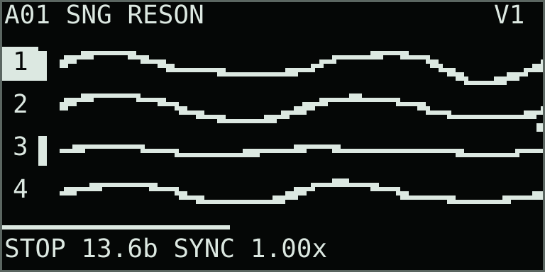
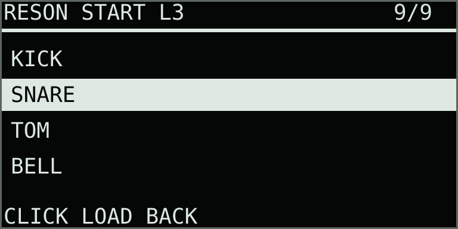
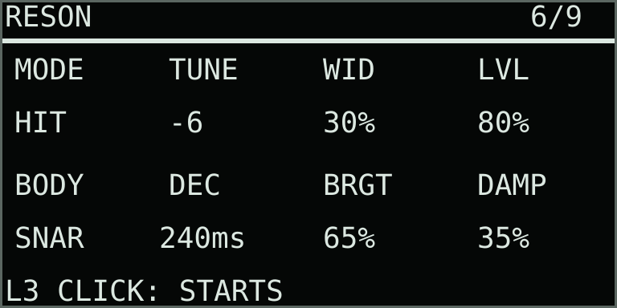
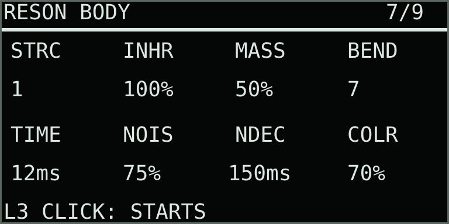
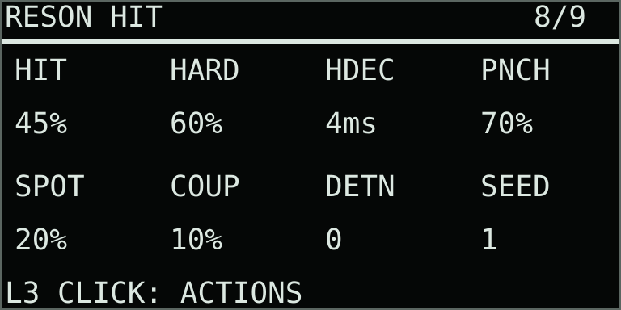
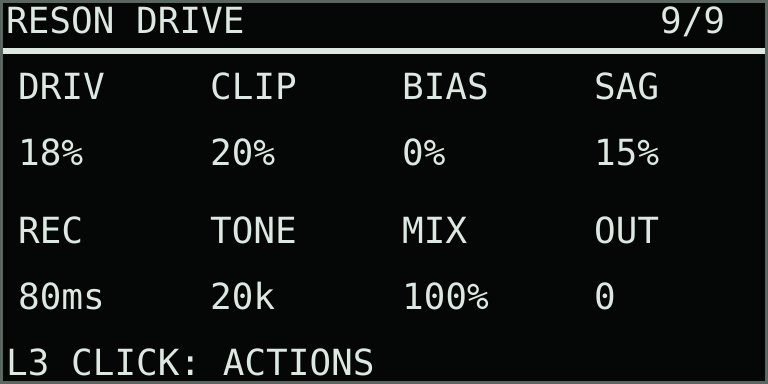

Playback engine 20 of 22
RESON
Play open resonant tones and struck percussion from eight compact modal bodies. Four patches can be blended with stack scanning, just like the other realtime synth engines.
Play and edit
Choose RESON from ENGINE’s main-encoder list. Track buttons select the patch to edit. Keyboard notes tune the body; the waveform view shows live scopes for the four patches. Samples already loaded in the lanes remain available to sample engines.

Choose TONE for a sustained instrument or HIT for decaying percussion. MODE applies at the next note. Click the main encoder on any RESON sound page for starting sounds: OPEN, KICK, SNARE, TOM, BELL, HAT, CRASH and CBASS. Turn to choose, click to load, or Back to cancel. Starting sounds replace the selected patch’s sound controls while preserving its LVL and WID. Undo restores the previous patch. Starting sounds are lane settings and cannot be loaded while holding a Sequence trig.

POS, FLD, SPD, JOIN, PADS, VARI and trig POS are unavailable because RESON generates its sound. Stack scanning blends patches in the scanning layouts; Sequence uses the assigned patch. Use the Amp Envelope for the note’s overall shape. In Sequence, the envelope fits within trig DUR, even when DEC is longer.
Parameter pages
Knobs 1–4 form the top row; 5–8 form the bottom row. A square marks a control that has no effect with the current settings.
RESON

| Knob | Display | Range | What it controls |
|---|---|---|---|
| 1 | MODE | TONE / HIT | Reson Articulation. TONE sustains an open modal body. HIT lets it decay after the strike. MODE is taken when a note begins; the other sound controls can change while it plays. |
| 2 | TUNE | -48–48 st | Reson Transpose. Transpose the keyboard pitch in semitones. |
| 3 | WID | 0–100 % | Reson Stereo Width. Stereo width after the body and its overload circuit. Zero produces mono. |
| 4 | LVL | 0–100 % | Reson Level. Patch level before the part mixer. |
| 5 | BODY | OPEN / KICK / SNAR / TOM / BELL / HAT / CRSH / CBAS | Reson Body. Body spectrum: open resonance, kick, snare, tom, bell, hat, crash or concert bass. Changing BODY keeps your other settings; click the main encoder for complete starting sounds. |
| 6 | DEC | 10–8000 ms | Reson Ring Decay. Body ring time to a quiet tail. In TONE, it controls the initial ring before the sustained level. The Amp Envelope still determines note release. |
| 7 | BRGT | 0–100 % | Modal Brightness. Balance of higher body modes. |
| 8 | DAMP | 0–100 % | Upper Mode Damping. Shorten the upper modes relative to the fundamental. |
RESON BODY

| Knob | Display | Range | What it controls |
|---|---|---|---|
| 1 | STRC | 0.5–2 | Modal Stretch. Expand or contract the spacing between modes. |
| 2 | INHR | 0–100 % | Body Inharmonicity. Move between harmonic spacing and the selected body’s modal ratios. |
| 3 | MASS | 0–100 % | Body Mass. Emphasize lower modes for a heavier body. |
| 4 | BEND | -48–48 st | Strike Pitch Sweep. Initial pitch offset, falling back to the played pitch. Available in HIT. |
| 5 | TIME | 1–2000 ms | Pitch Sweep Time. Time for the pitch sweep to settle. Requires HIT and a nonzero BEND. |
| 6 | NOIS | 0–100 % | Body Noise. Filtered noise mixed with the body. |
| 7 | NDEC | 1–4000 ms | Body Noise Decay. Noise decay in HIT. Requires NOIS above zero. |
| 8 | COLR | 0–100 % | Body Noise Color. Noise brightness. Requires NOIS above zero. |
RESON HIT

| Knob | Display | Range | What it controls |
|---|---|---|---|
| 1 | HIT | 0–100 % | Strike Level. Level of the short beater or impact. |
| 2 | HARD | 0–100 % | Beater Hardness. Beater brightness. Requires HIT above zero. |
| 3 | HDEC | 0.2–100 ms | Strike Decay. Impact decay in milliseconds. Requires HIT above zero. |
| 4 | PNCH | 0–100 % | Attack Punch. Emphasis over the first tens of milliseconds, before overload. |
| 5 | SPOT | 0–100 % | Strike Position. Change the balance of excited modes. |
| 6 | COUP | 0–100 % | Mode Coupling. Bounded interaction between the modes, adding a denser, less regular body. |
| 7 | DETN | 0–30 cent | Modal Stereo Detune. Stereo detuning of modal frequencies in cents. WID zero still sums the result to mono. |
| 8 | SEED | 0–65535 | Strike Seed. Noise seed for the next note. Changing it does not restart a held note. |
RESON DRIVE

| Knob | Display | Range | What it controls |
|---|---|---|---|
| 1 | DRIV | 0–100 % | Overload Drive. Input drive into the dedicated overload circuit. Zero keeps the shaping clean. |
| 2 | CLIP | 0–100 % | Overload Shape. Move from soft saturation toward harder clipping. Requires DRIV above zero. |
| 3 | BIAS | -100–100 % | Overload Asymmetry. Positive or negative asymmetry. Requires DRIV above zero. |
| 4 | SAG | 0–100 % | Overload Sag. Transient-dependent compression and recovery. The detector follows both channels together. Requires DRIV above zero. |
| 5 | REC | 5–500 ms | Sag Recovery. Sag recovery time. Requires DRIV and SAG above zero. |
| 6 | TONE | 200–20000 Hz | Overload Low Pass. Low-pass tone after overload. |
| 7 | MIX | 0–100 % | Overload Mix. Dry/wet balance of the overload and tone stage. Both paths share the same processing delay. |
| 8 | OUT | -18–12 dB | Overload Output. Output trim after the circuit. |
Shape the attack
Start with the patch’s clean body, set HIT and PNCH for attack, then increase DRIV. CLIP changes the hardness; BIAS adds asymmetry; SAG and REC shape how the circuit yields to a strong transient. Use TONE to soften the result, MIX to blend it, and OUT to match the level. A low-frequency DC filter follows the combined dry/wet signal. This circuit belongs to the patch and comes before the shared effects.
Clips and saved recipes
To save a RESON sound as a sample, resample its output with the normal audio recording workflow.
Clips and projects store all four patches. Sound controls support recorded gestures, MIDI, curated LFO destinations and Sequence sound locks, with their part and patch identity retained.
Opening an older Kick, Snare, Tom, Bell, Hat, Crash or Concert Bass WAV recipe transfers its main sound settings to the selected RESON patch. The lighter realtime bodies have their own sound; file curves, offline coloration and complex model-specific settings remain in the original recipe. Existing WAV audio stays unchanged. Membrane Kick, Modal and Medium are absent from the public Process chooser, while their old WAV files and recipe data remain readable.